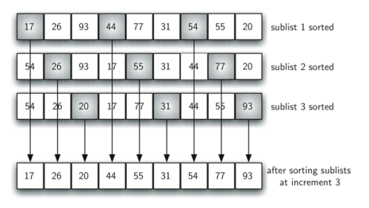

Basic Sorting Algorithm
Table of Contents
This is my study note when following alone interactive python.
Note: all images are from iteractive python.
Bubble Sort
Normal bubble
For each pair in the list (1&2, 2&3, 3&4), if the former is greater than latter, swap. After one pass from 0 to n, the largest number should be in the last position. Then only n-1 numbers need to be sorted, so it perform another pass from 0 to n-1.
Therefore the time complexity is \(O(n^2)\).

def bubble(lis): for last_num in range(len(lis) - 1, 0, -1): for index in range(0, last_num): if lis[index] > lis[index + 1]: tmp = lis[index] lis[index] = lis[index + 1] lis[index + 1] = tmp return lis alist = [54, 26, 93, 17, 77, 31, 44, 55, 20] bubble(alist) print(alist)
Short bubble
Although bubble sort wastes time swapping, it has a unique character among sorting algorithms: If it runs a pass without swapping any pair, then the list is already sorted and the program can end early.
That is good for lists that are almost sorted. The list below only need one pass.
def short_bubble(lis): swapped_last_iter = True last_num = len(lis) - 1 iter_count = 0 while last_num and swapped_last_iter: iter_count += 1 for index in range(0, last_num): if lis[index] > lis[index + 1]: swapped_last_iter = True tmp = lis[index] lis[index] = lis[index + 1] lis[index + 1] = tmp else: swapped_last_iter = False last_num -= 1 print(iter_count) alist = [20, 30, 40, 90, 50, 60, 70, 80, 100, 110] short_bubble(alist) print(alist)
Selection Sort
The selection sort improves on the bubble sort by making only one exchange for every pass through the list. Basically on each pass it looks for the largest number and then insert it in the proper place.
Although the time complexity of selection sort is also \(O(n^2)\), but because it makes much less exchanges, selection sort is usually faster than bubble sort.

def selection(lis): # note that it's to 1, not 0 # because we only need to place n to n-1 position # then 0 position will be left with the smallest number for index_of_last_num in range(len(lis) - 1, 1, -1): index_of_max = 0 # look for max number ('s index) for index in range(0, index_of_last_num + 1): if lis[index] > lis[index_of_max]: index_of_max = index # swap tmp = lis[index_of_last_num] lis[index_of_last_num] = lis[index_of_max] lis[index_of_max] = tmp alist = [54, 26, 93, 17, 77, 31, 44, 55, 20] selection(alist) print(alist)
Insertion Sort
The insertion sort, although still \(O(n^2)\), uses shifting instead of swapping, which is more efficient. Insertion sort maintains a sorted list in the beginning of the list.
It assumes the first item of the list is sorted (sorted one item list), and then for the 2nd, 3rd, … item, it shifts the number in the sorted list to put it into proper position.

def insertion(lis): for index_of_moving_num in range(1, len(lis)): moving_num = lis[index_of_moving_num] # this position is at the end of the sorted list position = index_of_moving_num # shift forward until reached the beginning of the list # or found the right position while position > 0 and lis[position - 1] > moving_num: # shift the number before back lis[position] = lis[position - 1] position -= 1 lis[position] = moving_num alist = [54, 26, 93, 17, 77, 31, 44, 55, 20] insertion(alist) print(alist)
Shell Sort
Or diminishing increment sort. It improves insertion sort by breaking a list into several sub lists and perform insertion sort on them. The key is that instead of breaking the list into continuous sub lists, shell sort chose a increment i, and choose all items i apart into a sub list.

Then by sorting these sub lists, items are closer to their right position

After all sub lists are sorted, a final insertion sort sorts everything into position. Because of the earlier sub list sorting, the final sort requires less shifting.
Shell sort's time complexity often falls somewhere between \(O(n)\) and \(O(n^2)\). By changing the increment, for example using \(2k−1\), (1, 3, 7, 15, 31, and so on), a shell sort can perform at \(O(n^\frac{3}{2})\).
def gap_insertion(lis, start_pos, gap): # same as insertion but step by sublist_count instead of 1 for index in range(start_pos + gap, len(lis), gap): moving_num = lis[index] position = index while position >= gap and lis[position - gap] > moving_num: lis[position] = lis[position - gap] position = position - gap lis[position] = moving_num def shell(lis): sublist_count = len(lis) // 2 while sublist_count > 0: for start_pos in range(sublist_count): gap_insertion(lis, start_pos, sublist_count) print( 'Sorted sublists of number %d and list looks like' % sublist_count) print(lis) sublist_count = sublist_count // 2 alist = [54, 26, 93, 17, 77, 31, 44, 55, 20] shell(alist) print(alist)
Merge Sort
Merge sort has to stages: in the first stage it recursively subdivides the list by half until there is only on item in each list; in the second stage it merges each sublists back and sort them in the same time.
In the first stage the list is subdivided \(\log_2 n\) times, so the time complexity is \(O(n \log n)\).


def merge(lis): print("Splitting:", lis) if len(lis) > 1: # split and merge mid = len(lis) // 2 left = lis[:mid] right = lis[mid:] merge(left) merge(right) # merge them i = 0 j = 0 k = 0 while i < len(left) and j < len(right): # before left and right run out # compare their smallest element (the first) # and insert the smaller one into the main list if left[i] < right[j]: lis[k] = left[i] i += 1 else: lis[k] = right[j] j += 1 k += 1 # in case one list runs out before another, # which is likely to happen while i < len(left): lis[k] = left[i] i += 1 k += 1 while j < len(right): lis[k] = right[j] j += 1 k += 1 print("Merging:", lis) alist = [54,26,93,17,77,31,44,55,20] merge(alist) print(alist)
Output:
Splitting: [54, 26, 93, 17, 77, 31, 44, 55, 20] Splitting: [54, 26, 93, 17] Splitting: [54, 26] Splitting: [54] Merging: [54] Splitting: [26] Merging: [26] Merging: [26, 54] Splitting: [93, 17] Splitting: [93] Merging: [93] Splitting: [17] Merging: [17] Merging: [17, 93] Merging: [17, 26, 54, 93] Splitting: [77, 31, 44, 55, 20] Splitting: [77, 31] Splitting: [77] Merging: [77] Splitting: [31] Merging: [31] Merging: [31, 77] Splitting: [44, 55, 20] Splitting: [44] Merging: [44] Splitting: [55, 20] Splitting: [55] Merging: [55] Splitting: [20] Merging: [20] Merging: [20, 55] Merging: [20, 44, 55] Merging: [20, 31, 44, 55, 77] Merging: [17, 20, 26, 31, 44, 54, 55, 77, 93] [17, 20, 26, 31, 44, 54, 55, 77, 93]
Note that slicing is \(O(k)\) where \(k\) is the size of the list. So in order to get truly \(O(n \log n)\) you need to play around with pointers, which I'm too lazy to do.
Quick Sort
The quick sort uses divide and conquer to gain the same advantages as the merge sort, while not using additional storage. As a trade-off, however, it is possible that the list may not be divided in half. When this happens, we will see that performance is diminished.
A quick sort first selects a value, which is called the pivot value. Although there are many different ways to choose the pivot value, we will simply use the first item in the list. The role of the pivot value is to assist with splitting the list. The actual position where the pivot value belongs in the final sorted list, commonly called the split point, will be used to divide the list for subsequent calls to the quick sort.
How it works:
- Find the pivot value, in this case the first element 54.
- Put
leftmarkandrightmarkon the first and last position of the remaining list. - Repeat until
leftmarkandrightmarkcross:leftmarkgo right until hit a number greater than pivot value.rightmarkgo left until hit a number less than pivot value.- Swap number under
leftmarkandrightmark.
- Now, we consider the
rightmarkthe split point, all elements to its left is smaller than pivot value and all elements to it's right is greater than pivot value. Insert pivot value (54) atrightmark. - Recursively sort the two halves with above steps.


def quick(lis, first=None, last=None): # first and last default to 0 and len -1 first = 0 if first == None else first last = len(lis) - 1 if last == None else last if first < last: # step 3 split_point = partition(lis, first, last) # recursively sort quick(lis, first, split_point - 1) quick(lis, split_point + 1, last) def partition(lis, first, last): pivot_value = lis[first] leftmark = first + 1 rightmark = last done = False while not done: # step 3.1 # move leftmark until hit a number greater than pivot value while leftmark <= rightmark and lis[leftmark] <= pivot_value: leftmark += 1 # step 3.2 # move rightmark until hit a number less than pivot value. while leftmark <= rightmark and lis[rightmark] >= pivot_value: rightmark -= 1 if rightmark < leftmark: done = True else: # swap tmp = lis[rightmark] lis[rightmark] = lis[leftmark] lis[leftmark] = tmp # Now all numbers left of rightmark is smaller than pivot value # and all numbers left of leftmark is greater than pivot value tmp = lis[first] # pivot value lis[first] = lis[rightmark] lis[rightmark] = tmp return rightmark # return as split_point alist = [54,26,93,17,77,31,44,55,20] quick(alist) print(alist)
The problem with quick sort is that in worst case the pivot value so off that one sub list is of length 0 and another is of length \(n - 1\), then \(n - 2\), and so on. Then you get a time complexity of \(O(n^2)\).
To workaround this, use a technique called median of three: chose the first, middle and last number, and use the median.